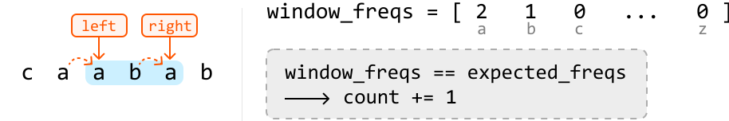

Substring Anagrams
MediumGiven two strings, s and t , both consisting of lowercase English letters, return the number of substrings in s that are anagrams of t.
An anagram is a word or phrase formed by rearranging the letters of another word or phrase, using all the original letters exactly once.
Example:
Input: s = 'caabab', t = 'aba'
Output: 2
Explanation: There is an anagram of t starting at index 1 ("caabab") and another starting at index 2 ("caabab")
Intuition
We can reframe how we think about an anagram by altering the provided definition. A substring of s qualifies as an anagram of t if it contains exactly the same characters as t in any order.
For a substring in s to be an anagram of t, it must have the same length as t (denoted as len_t). This means we only need to consider substrings of s that match the length len_t, which saves us from examining every possible substring.
To examine all substrings of a fixed length, len_t, we can use the fixed sliding window technique because a window of len_t is guaranteed to slide through every substring of this length. We can see this in the example below:
![Image represents a visual depiction of a sliding window algorithm, likely for string manipulation or pattern matching, where `len_t = 3` defines the window size. The diagram shows four stages. Each stage features two orange rectangular boxes labeled 'left' and 'right,' representing pointers or indices at the beginning and end of a sliding window, respectively. Arrows descend from these boxes to a light-blue rectangular box containing a sequence of characters ('c', 'a', 'a', 'b', 'a', 'b'). The sequence represents the input string. In each stage, the window, indicated by the light-blue box, slides one position to the right. The first stage shows the window encompassing 'c', 'a', 'a'. The second stage shows the window shifted to 'a', 'a', 'b'. The third stage shows 'a', 'b', 'a'. The fourth stage shows 'b', 'a', 'b'. Gray arrows separate the stages, indicating the progression of the sliding window across the input string. The algorithm appears to be processing the string in a left-to-right manner, with the window size remaining constant at 3.](images/05_01_substring-anagrams-img-a08465b1.svg)
Now, we just need a way to check if a window is an anagram of t. Remember that in an anagram, the order of the letters doesn’t matter; only the frequency of each letter does. By comparing the frequency of each character in a window against the frequencies of characters in string t, we can determine if that window is an anagram of t.
Let's explore this reasoning with an example. Before starting the sliding window algorithm, we need a way to store the frequencies of the characters in string t. We could use a hash map for this, or an array, expected_freqs, to store the frequencies of each character in string t.
expected_freqsis an integer array of size 26, with each index representing one of the lowercase English letters (0 for 'a', 1 for 'b', and so on, up to 25 for 'z').
![Image represents a diagram illustrating the concept of frequency counting in a string. The diagram shows a string `s = 'caababb'` and a target string `t = 'aba'`. Curved arrows connect the characters of `t` to a frequency array labeled `expected_freqs`. This array represents the expected frequencies of characters in `t`. Specifically, the array `expected_freqs` shows that 'a' appears twice (2), 'b' appears once (1), 'c' appears zero times (0), and all other characters from 'd' to 'z' also appear zero times (represented by `... 0`). The arrangement visually demonstrates how the characters in the target string `t` are mapped to their corresponding counts within the `expected_freqs` array, which is used to determine the frequency of each character in the target string.](images/05_01_substring-anagrams-img-9029e0ab.svg)
To set up the sliding window algorithm, let’s define the following components:
-
Left and right pointers: Initialize both at the start of the string to define the window's boundaries.
-
window_freqs: Use an array of size 26 to keep track of the frequencies of characters within the window. -
count: Maintain a variable to count the number of anagrams detected.
Before we slide the window, we first need to expand it to a fixed length of len_t. This can be done by advancing the right pointer until the window length is equal to len_t. As we expand, ensure to keep window_freqs updated to reflect the frequencies of the characters in the window:
![Image represents a diagram illustrating a data structure or algorithm related to character frequency counting within a sliding window. Two rectangular boxes labeled 'left' and 'right' are positioned above a light-blue square labeled 'C'. Arrows descend from 'left' and 'right' pointing to 'C', suggesting that 'left' and 'right' might represent boundaries of a sliding window. To the right of the 'C' square, a sequence of characters 'caabab' is shown. Adjacent to this character sequence, a variable named 'window_freqs' is defined and assigned a list or array. This array appears to represent the frequency of each character within the window, indicated by the numbers 0, 0, 1, followed by an ellipsis (...) and ending with 0. Subscripts beneath the numbers in the array 'window_freqs' show that the values correspond to characters 'a', 'b', 'c', ..., 'z', implying that the array tracks the frequency of each character from 'a' to 'z' within the defined window. The diagram likely depicts a step in a process where the window moves across a larger sequence of characters, updating the 'window_freqs' array at each step.](images/05_01_substring-anagrams-img-4cec8088.svg)
![Image represents a sliding window mechanism demonstrating character frequency counting. Two rectangular boxes labeled 'left' and 'right' (in gray and orange respectively) point downwards with arrows towards a light-blue box containing the character 'c' and followed by the character sequence 'aabab'. The arrows indicate the movement of a sliding window of size one character. The 'left' box indicates the leftmost position of the window, and the 'right' box indicates the rightmost position. To the right of the character sequence, a variable named `window_freqs` is defined and assigned a list representing character frequencies within the window. The list shows '1' for 'a', '0' for 'b', '1' for 'c', and ellipses (...) indicating continuation, ending with '0' for 'z'. The numbers in the list represent the count of each character within the current window, with the characters 'a' to 'z' listed below the corresponding frequency values. The diagram illustrates how the window moves across the sequence, updating the `window_freqs` list to reflect the character frequencies in each position.](images/05_01_substring-anagrams-img-7614ca06.svg)
![Image represents a sliding window over a sequence of characters ('c', 'a', 'a', 'b', 'a', 'b'). A rectangular box highlights the current window, labeled 'len_t' indicating its length. Above the window, two rectangular boxes labeled 'left' and 'right' show the direction of window movement. An arrow points from 'left' to the leftmost character of the window, and a dashed arrow points from 'right' to the second 'a' in the window, suggesting the window's movement. To the right, a variable named `window_freqs` is defined as an array; this array represents the frequency of each character within the current window. The array shows '2' for 'a', '0' for 'b', '1' for 'c', and ellipses (...) indicating other characters, finally showing '0' for 'z'. The characters 'a', 'b', 'c', and 'z' are subscripted under their corresponding frequencies in the array, clarifying which character each frequency represents.](images/05_01_substring-anagrams-img-a99b2ac4.svg)
Once the window is at the fixed length of len_t, we can check if it’s an anagram of t by checking if the expected_freqs and window_freqs arrays are the same. This can be done in constant time since it requires only 26 comparisons, one for each lowercase English letter.
To slide this window across the string, advance both the left and right pointers one step in each iteration. Ensure to keep window_freqs updated by incrementing the frequency of each new character at the right pointer and decrementing the frequency of the character at the left pointer as we move past this left character:
![Image represents a Python-like array assignment statement. The statement `expected_freqs = [...]` assigns a numerical array to the variable `expected_freqs`. The array is enclosed in square brackets `[]` and contains numerical values representing frequencies. Specifically, the first element is 2, associated with the character 'a'; the second is 1, associated with 'b'; the third is 0, associated with 'c'; and the remaining elements (indicated by an ellipsis '...') are all 0, extending up to and including the element associated with the character 'z'. The characters 'a' through 'z' are shown below the corresponding frequency values, indicating that the array likely represents the expected frequencies of each letter in the alphabet. There are no URLs or parameters present.](images/05_01_substring-anagrams-img-e6c8a2bf.svg)
![Image represents a data flow diagram illustrating a comparison process. On the left, two labeled boxes, 'left' and 'right,' point downwards with arrows to a light-blue rectangular box containing the character sequence 'c a a b a b'. This sequence appears to be a data window. To the right, the variable `window_freqs` is defined and assigned an array-like value `[2 0 1 ... 0]`, where the subscripts 'a', 'b', 'c', and 'z' indicate that the array represents the frequencies of characters 'a', 'b', 'c', and so on, up to 'z' within the window. The ellipsis (...) denotes that the array continues with frequencies for characters not explicitly shown. Below, a dashed-line box shows a comparison: `window_freqs != expected_freqs`, indicating that the calculated frequencies (`window_freqs`) are being checked against some pre-defined `expected_freqs`. An arrow labeled 'continue' emerges from this box, suggesting that the process continues if the comparison is true (i.e., the frequencies do not match the expected values).](images/05_01_substring-anagrams-img-fa2b01fc.svg)
![Image represents a sliding window algorithm visualization. Two orange rectangular boxes labeled 'left' and 'right' point downwards with arrows to a light-blue rectangular box containing a sequence of characters 'c a a b a b'. Dashed lines extend from the arrows to indicate the window's boundaries. The 'left' pointer is positioned at the 'a' and the 'right' pointer at the 'b', defining the current window. Above, a list `window_freqs = [2 1 0 ... 0]` shows the frequency count of characters within the window (2 'a's, 1 'b', 0 'c', etc., up to 'z'). To the right, a light-grey box depicts a conditional check: `window_freqs == expected_freqs`, implying a comparison with a pre-defined frequency array (`expected_freqs`). If the condition is true, a counter `count` is incremented (`count += 1`). The diagram illustrates how the window moves across the character sequence, updating `window_freqs` and checking for matches against `expected_freqs` at each step.](images/05_01_substring-anagrams-img-7e739e83.svg)

a 1b 0c ... 0z]' shows a frequency array; '2' indicates two occurrences of 'a' within the window, '1' shows one 'b', and '0' represents zero occurrences of 'c' and all other characters (represented by '...'). A light-grey dashed-line box displays the condition 'window_freqs == expected_freqs' which, if true, increments a counter: 'count += 1'. The diagram illustrates how the algorithm checks character frequencies within a sliding window against an expected frequency distribution ('expected_freqs'), updating a counter when a match is found."/>![Image represents a sliding window algorithm visualization. Two orange rectangular boxes labeled 'left' and 'right' point downwards via orange arrows to a light-blue rectangular box containing the character sequence 'c a a b'. Dotted orange lines indicate the window's movement. Above, 'window_freqs = [1 2 0 ... 0]' shows an array representing the frequency of characters ('a', 'b', 'c', ..., 'z') within the current window, with 'a' having frequency 1, 'b' having frequency 2, and others having frequency 0. A light-grey dashed-line box displays the condition 'window_freqs != expected_freqs' and an arrow pointing right labeled 'continue,' indicating that if the window's character frequencies do not match the 'expected_freqs' (not shown), the algorithm continues processing. The overall diagram illustrates a step in a character frequency-based algorithm where a sliding window is used to compare observed frequencies against expected frequencies.](images/05_01_substring-anagrams-img-679437c4.svg)
Once we’ve finished processing all substrings of length len_t, we can return count, which represents the number of anagrams found.
A small optimization we can make is returning 0 if t's length exceeds the length of s because forming an anagram of t from the substrings of s is impossible if t is longer.
[Interactive code editor — visit bytebytego.com to run]
Implementation
In Python, we can use ord(character) - ord('a') to find the index of a lowercase English letter in an array of size 26. The ord function takes an integer and returns its ASCII value. This formula calculates the distance of this character from 'a', resulting in an index between 0 and 25.
def substring_anagrams(s: str, t: str) -> int:
len_s, len_t = len(s), len(t)
if len_t > len_s:
return 0
count = 0
expected_freqs, window_freqs = [0] * 26, [0] * 26
# Populate 'expected_freqs' with the characters in string 't'.
for c in t:
expected_freqs[ord(c) - ord('a')] += 1
left = right = 0
while right < len_s:
# Add the character at the right pointer to 'window_freqs' before sliding the
# window.
window_freqs[ord(s[right]) - ord('a')] += 1
# If the window has reached the expected fixed length, we advance the left
# pointer as well as the right pointer to slide the window.
if right - left + 1 == len_t:
if window_freqs == expected_freqs:
count += 1
# Remove the character at the left pointer from 'window_freqs' before
# advancing the left pointer.
window_freqs[ord(s[left]) - ord('a')] -= 1
left += 1
right += 1
return count
export function substring_anagrams(s, t) {
const len_s = s.length
const len_t = t.length
if (len_t > len_s) {
return 0
}
let count = 0
const expected_freqs = Array(26).fill(0)
const window_freqs = Array(26).fill(0)
// Populate 'expected_freqs' with the characters in string 't'.
for (let c of t) {
expected_freqs[c.charCodeAt(0) - 'a'.charCodeAt(0)] += 1
}
let left = 0
let right = 0
while (right < len_s) {
// Add the character at the right pointer to 'window_freqs' before sliding the window.
window_freqs[s.charCodeAt(right) - 'a'.charCodeAt(0)] += 1
// If the window has reached the expected fixed length, we advance the left
// pointer as well as the right pointer to slide the window.
if (right - left + 1 === len_t) {
if (arrays_equal(window_freqs, expected_freqs)) {
count += 1
}
// Remove the character at the left pointer from 'window_freqs' before advancing the left pointer.
window_freqs[s.charCodeAt(left) - 'a'.charCodeAt(0)] -= 1
left += 1
}
right += 1
}
return count
}
function arrays_equal(arr1, arr2) {
for (let i = 0; i < 26; i++) {
if (arr1[i] !== arr2[i]) {
return false
}
}
return true
}
public class Main {
public Integer substring_anagrams(String s, String t) {
int lenS = s.length(), lenT = t.length();
if (lenT > lenS) {
return 0;
}
int count = 0;
int[] expectedFreqs = new int[26];
int[] windowFreqs = new int[26];
// Populate 'expectedFreqs' with the characters in string 't'.
for (char c : t.toCharArray()) {
expectedFreqs[c - 'a'] += 1;
}
int left = 0, right = 0;
while (right < lenS) {
// Add the character at the right pointer to 'windowFreqs' before sliding the
// window.
windowFreqs[s.charAt(right) - 'a'] += 1;
// If the window has reached the expected fixed length, we advance the left
// pointer as well as the right pointer to slide the window.
if (right - left + 1 == lenT) {
boolean isMatch = true;
for (int i = 0; i < 26; i++) {
if (windowFreqs[i] != expectedFreqs[i]) {
isMatch = false;
break;
}
}
if (isMatch) {
count += 1;
}
// Remove the character at the left pointer from 'windowFreqs' before
// advancing the left pointer.
windowFreqs[s.charAt(left) - 'a'] -= 1;
left += 1;
}
right += 1;
}
return count;
}
}
Complexity Analysis
Time complexity: The time complexity of substring_anagrams is O(n), where n denotes the length of s. Here’s why:
- Populating the
expected_freqsarray takes O(m) time, where m denotes the length of t. Since m is guaranteed to be less than or equal to n at this point, it’s not a dominant term in the time complexity. - Then, we traverse string
slinearly with two pointers, which takes O(n) time. - Note that at each iteration, the comparison performed between the two frequency arrays (
expected_freqsandwindow_freqs) takes O(1) time because each array contains only 26 elements.
Space complexity: The space complexity is O(1) because each frequency array contains only 26 elements.